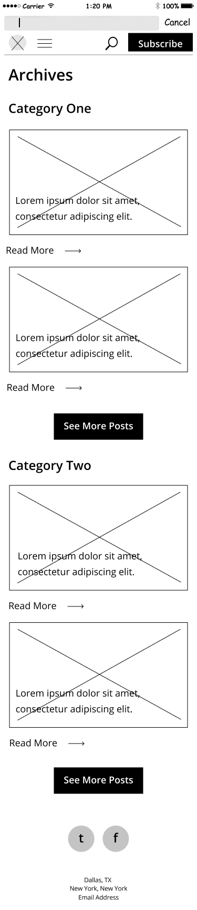
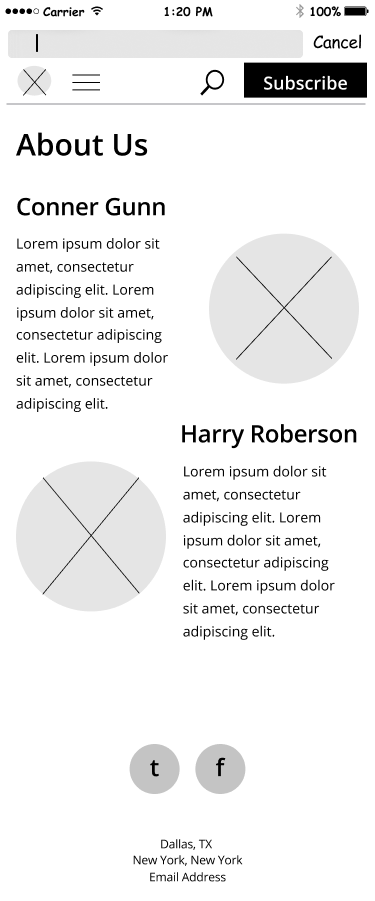
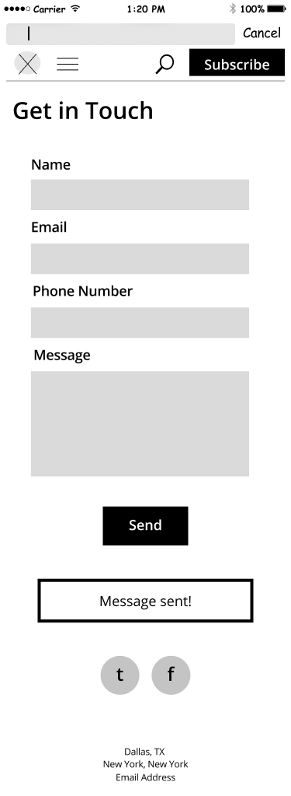
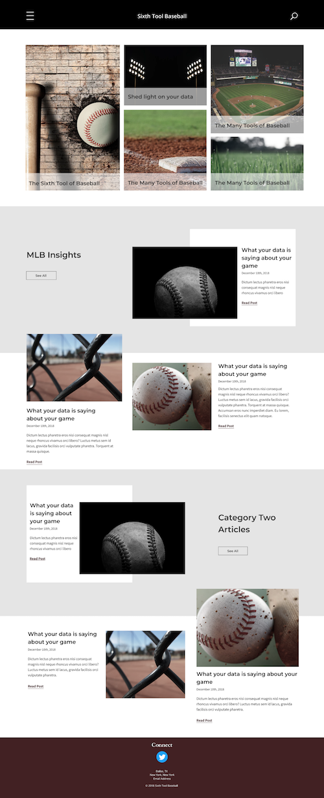
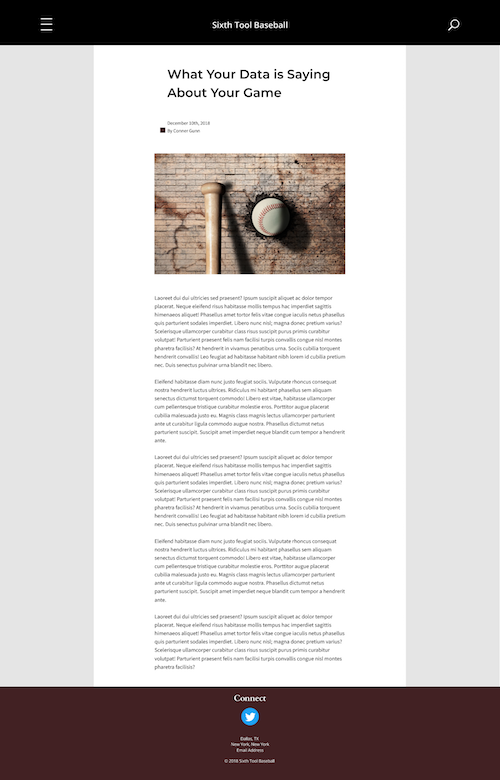
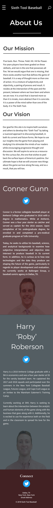
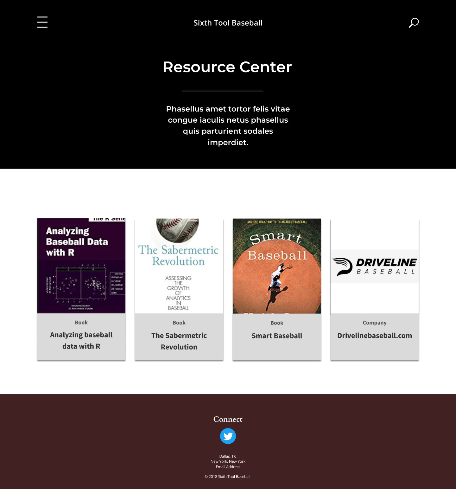
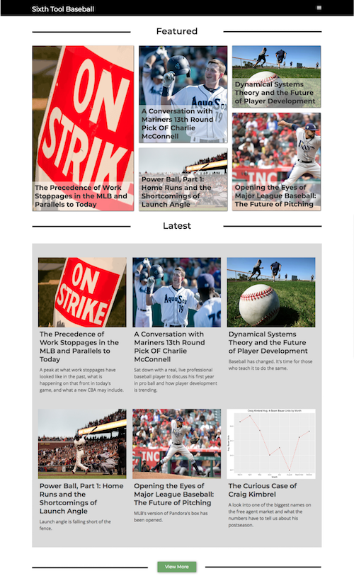
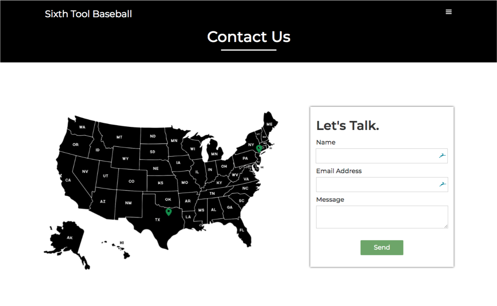
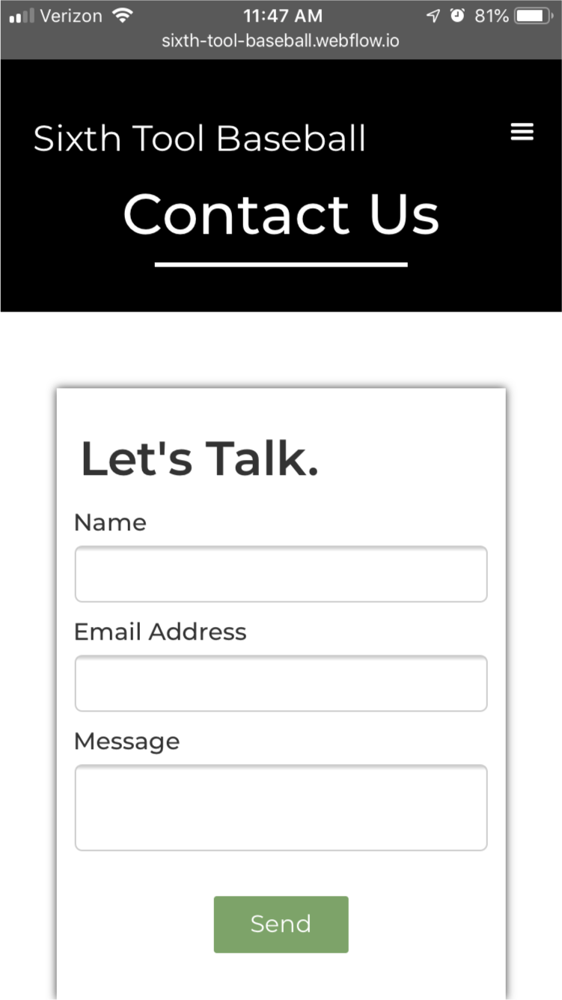

Sixth Tool Baseball
There used to be five known tools to baseball performance. Sixth Tool Baseball introduces another by explaining the analytics behind the challenging sport.
Role
-
UX Research & Design
-
Front End
-
Visual Design
Tools
-
Figma
-
Sketch
-
Adobe Creative Suite
-
Invision
-
Sketch Pad
-
Webflow
Deliverables
-
Competitive Analysis
-
UX Documentation
-
Wireframes
-
Style Guide
-
High Fidelity Mockups
-
Prototype
-
User Testing
Duration
-
12 Weeks
The Problem
THE CLIENT
"I am spending way too much time working with wordpress and not enough time developing articles."
THE USER
Baseball players need a place to learn the math behind the game so they can take it one step further.
The Solution
The Sixth Tool Baseball CMS website showcases their featured articles, archives, and categorized resources so their readers can learn from them and their sources. This website promotes the learning of baseball analytics to equip baseball players with every possible tool.
The client no longer spends time working on the site. The CMS allows the client to quickly paste in the article, upload a photo, select an author, add a new resource, and add a new category.
Discovery
Competitive Analysis
I decided to analyze baseball analytics companies for visual design and branding. I also analyzed some of the top blog websites to determine patterns needed for the wireframing phase. Below are the key findings:
Featured articles are listed on the homepage. Users can look at additional articles by going to a separate archives page.
During the second phase I researched resource pages. Resources for users can be found on a separate resources page. This is normally organized by category and given in a card format so users have a preview of what the book cover or company logo looks like for quick scanning.
Driveline Baseball used an orange and greyscale color scheme to promote activity and athletics. The typefaces chosen were common athletic choices. The look and feel of the site was taken into consideration but our goal was focused more on education instead of marketing consultancy.
The Client also requested an interactive collage similar to Microsoft Stories. At this time I researched different collages and the steps to create them.
Information Architecture
Wireframes
To begin wireframing I sketched out all of the screens needed for the MVP along with alternative variations.
After finalizing my sketches, I put them into Figma to create my first low fidelity wireframe to begin usability testing. I designed mobile-first and then moved onto desktop. I created variations of the homepage for mobile view since it wouldn’t include the collage that would be displayed on the desktop view.
Homepage
Example Article Page
Article Archives
About Page
Contact Page- Message Sent
Main Menu
After testing to ensure users could find articles, contact the writers, and learn more about their background, I made adjustments requested by the client.
The client wanted a separate resources page for the users to learn more about where they get their information.
The categories were removed for the archives and articles on the homepage due to the lower volume at this stage. Resources remained categorized since there was a higher volume.
Visual Design
Branding
Sixth Tool Baseball is athletic, confident, and educational.
I started with a moodboard so I could work with the client to understand what look and feel they were wanting for Sixth Tool Baseball. I pulled colors from photos that were later tweaked and incorporated into the color scheme.
This is the final color scheme used for Sixth Tool Baseball. A grey scale is mainly used for an educational look. The reds and greens often associated with baseball are used as accents and call to action.
Montserrat was chosen as the brand typeface due to its athletic, geometric, and modern look. Open Sans was chosen as the paragraph and labeling typeface due to its high readability for long articles.
High Fidelity Mockups
Homepage- Desktop
Article Page-Desktop
Homepage - Mobile
About Page - Mobile
Resource Page - Desktop
About Page - Desktop
The visual designs were reviewed with the client and were later altered to remove the categories and give a more direct listing of the articles without the staggered golden rectangle look.
Front End Development
Webflow was used to develop the website. I started from a blank page and utilized HTML and CSS knowledge to translate it into Webflow. The collage was altered several times in order to allow it to update as the collections in the CMS are altered. The white overlay and headline will shift as its size changes. The collage zooms in on the photo as the user hovers over each item. The latest articles section is also interactive when the user hovers, the photo, headline, and description have a shadow to show a raised and selected look.
Homepage - Live
Archives Page- Hover Feature Shown
Resource Page- Hover Feature Shown
Article CMS Page
About Page

Contact Page
Article - Mobile
Archives - Mobile
Contact Page - Mobile
Reflections
This was my first time creating a CMS so it took some learning along the way to know how to structure it for the client. What to make required and optional and how to set limits on things like the blog description word count in order to keep the design as intended when they add new articles.
My CSS skills were definitely challenged in the creation of the homepage collage. I had to use flexbox, absolute and relative positioning. I went through iterations to make sure it was completely responsive to changing headline titles and synced with the CMS.
I also learned that I need to ask more questions in the beginning when working with the client. Deliverables were added over time, but it would have been helpful to know about the need for a resources page and the categories they should go in. This could be helped by me asking more questions in the future to understand the client’s needs and vision.
The moodboard creation was helpful in getting the work started and the conversation going with the client. I will continue to do this in the future.